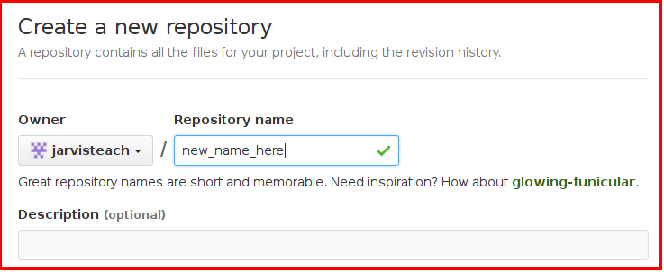

Git Guide
Below are some useful commands for using git, GitHub & PyPI from the command line.
Simple Set-up
Git provides local version control - allowing you to keep backups of previous versions of your code.
It's really easy to get started:
git init- will initialise Git for your current project,git add [filename]- will queue a new file or changes to an existing file to be savedgit commit- will save the new versions of the files you've added - with a message describing the changes.
That's it, you now have full version control over your code.
It works in Windows, OSX or Linux and is supported by most popular IDEs (including Visual Studio).
You can even take it a step further, by sharing your code on the Web.
GitHub provides a free place to sink & share your code.
It will also allow other people to view & contribute to your code.
You first need to create an account on GitHub, and then a new repo:

Then copy your repo's address, and add it to your local git account:
git remote add origin [web_address]- link your local Git repo to a GitHub repo.
Then, once you've committed local changes, you can push them to GitHub:
git push- send your local changes to your online GitHub repository.
Setting Up
git init
Creates a new local git repository, in the current directorygit remote add origin [URI]
This will link your newly created, local repository, with the one specified on GitHubgit clone [URI]
This will copy a git repository, from GitHub, to the current directory
Updating
git remote update
This will update your log of remote changesgit pull
This will get any changes from GitHub, and update your local copy
Checking
git status
This will compare your local copy, with the copy on GitHub, and tell you any differences.
Adding
git add [file]
Add a new file to your local repositorygit add .
Add any changes you've made to your local repositorygit commit -m "message here"
Commit anything you've added to your local repositorygit commit -a -m "message here"
CombinesaddandcommitSyncing all changes to your local repository
Undoing
git checkout XXX
This will restore a file to the latest version in Git.
Pushing
git push
Pushes all changes you've added & committed locally, to GitHub
Branching & Merging
Branching is useful to allow you to develop a new feature, without affecting the main branch.
That way, your main branch remains untouched, until you are ready to add in your new feature.
This is useful, as it means the main branch always matches what is currently released, and it also lets you release emergency fixes on the main branch, without having to include whatever new feature is currently being worked on.
-
git branch
List all the branches in your repo -
git checkout <branch>
Switch to the named <branch> -
git branch <branch>
Create a new branch called <branch> -
git checkout -b <new-branch>
Create and switch to a <new-branch> -
git branch -d <branch>
Delete the branch called <branch>
Once your branch is complete, ie. you finished your new feature and are ready to add it to your main branch for a new release.
You simply merge your feature branch back into the main branch.
- First you have to checkout the master branch:
git checkout masterfollowed by agit pullto get any missing fixes. - Then, there are two options:
- Merge in your feature branch:
git merge <branch> - Or pull down your feature branch:
git pull origin <branch>
- Merge in your feature branch:
- Once you have added your feature branch into the main branch, you then push it all back again:
git push - You now have a new version - so you should tag it with a version number
Tagging
git tag -a vXXX -m "Tag description
git push origin vXXX
This tags the current build in git
Then pushes it to GitHub
PyPI
python setup.py register -r pypitest
This will register the package with PyPI Testpython setup.py sdist upload -r pypitest
This will upload the stuff to PyPI Testpip install --verbose --index-url https://testpypi.python.org/pypi appJar
This will attempt to install from the PyPI test server